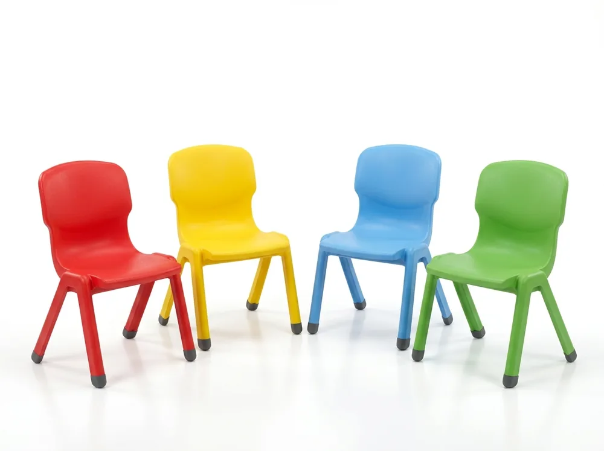

When prospective parents walk into a preschool or nursery for admission inquiries, their subconscious decision is formed within 90 seconds. They do not evaluate your lesson plans or phonics curriculum first; they look at the classroom physical environment. Are the chairs safe, vibrant, and ergonomically scaled? Are the tables hygienic and rounded? Is the toy storage accessible to a 3-year-old, or do heavy wooden cupboards tower dangerously overhead?
Commercial preschool furniture is not scaled-down adult office furniture. Early childhood physical development requires furniture that supports dynamic posture, vestibular balance, gross & fine motor independence, and extreme sanitization resistance. Purchasing cheap, non-certified retail tables and chairs leads to peeling laminate, cracked legs, tip-over hazards, and costly replacements within a single academic term.
1. Why Preschool Furniture is Fundamentally Different
In primary and secondary schools, students remain seated at dual or single desks facing a blackboard for 40-minute instructional blocks. In early childhood education (Ages 1.5 to 5.5 years), movement is the medium of learning. Toddlers alternate between circle time on the floor, sensory sand/water play, finger painting, block building, guided phonics, and snack time every 15 to 20 minutes.
Because of this fluidity, preschool furniture must satisfy four distinct engineering criteria:
- Zero Sharp Edges & Radius Continuity: All table corners, chair edges, and shelf lips must feature an edge radius of at least R10 to R15 (10–15mm). Sharp 90-degree corners create laceration risks during inevitable toddler falls.
- Featherweight yet Tip-Proof: Chairs must be light enough for a 3-year-old to lift and carry (under 1.8 kg) to practice classroom responsibility, yet designed with a wide, splayed base footprint to prevent backward tipping when children squirm or lean.
- Chemical & Saliva Invariance: Young learners explore with their mouths and skin. Polymers, paints, and lacquers must be 100% non-toxic, lead-free, and impervious to vomit, urine, water spills, and harsh disinfectant wipes.
- Micro-Anthropometrics: A 50mm (2-inch) variance in seat height is the difference between healthy posture and restricted femoral blood circulation. Exact height calibration is mandatory.
2. Preschool Tables Buying Checklist: Shapes, Sizing & Materials
Activity tables form the nerve centers of early childhood rooms. Rather than outfitting an entire classroom with identical rectangular desks, high-performing preschools deploy a pedagogical mix of geometric shapes.

A. Table Shapes & Their Pedagogical Use Cases
- Circular Tables (Diameter 90 cm to 105 cm): The gold standard for social interaction, collaborative building blocks, and meal/snack times. Accommodates 4 to 5 toddlers with zero preferential hierarchy and no corners.
- Horseshoe / Kidney / Moon Tables (150 cm x 90 cm): Essential for teacher-facilitated small group learning. The teacher sits inside the inner cutout, placing all 5 or 6 children within direct arm's reach for one-on-one phonics, letter tracing, or speech therapy.
- Trapezoidal & Hexagonal Modular Tables: Designed for flexibility. They function as 2-student individual workstations or lock together into large 6-to-8 child collaborative islands for thematic projects.
- Rectangular Tables (120 cm x 60 cm): Best suited for sensory play trays, dough modeling, Lego bases, and wall-adjacent computer or tablet stations.
B. Material Engineering: Virgin Polymer vs. Plywood Laminate
| Specification Factor | Blow-Molded Virgin HDPE / LLDPE | Pre-Laminated MDF / Particle Board | Birch Plywood with Solid Hardwood Edge |
|---|---|---|---|
| Edge Protection | Seamless one-piece molded bullnose rim (100% hygienic) | Glued PVC edge tape (peels within 6–12 months when bitten or picked) | CNC-beveled natural wood edge sealed with water-based PU |
| Water & Spill Resistance | 100% waterproof; submergeable and power-washable | Water penetrates edge joints; swells, bubbles, and harbors mildew | Highly water-resistant when marine/BWP grade is utilized |
| Impact Durability | Resilient flex; absorbs heavy drops without chipping | Brittle corners; chips easily when toys strike edges | Extremely high structural integrity; 10+ year lifespan |
| Institutional Recommendation | Top Choice for High-Activity Rooms | Avoid for Toddlers & Daycares | Premier Choice for Montessori Academies |
C. Critical Table Features to Verify Before Buying
- Telescopic Height-Adjustable Legs: Steel tube legs with dual-locking Allen screw or push-pin mechanisms that adjust between 480 mm and 560 mm. This allows the same table to transition from Playgroup to UKG over multiple school terms.
- 16-Gauge Powder-Coated Metal Frames: Tubular steel substructure (minimum 1.5 mm wall thickness) prevents tabletop sagging when children inevitably lean or climb onto the surface.
- Nylon Floor Glides with Self-Leveling Thread: Threaded glides compensate for uneven classroom floor tiles and eliminate screeching noises during table relocation.
3. Preschool Chairs Buying Checklist: Sizing & The 90-90-90 Rule
Chair sizing errors cause more behavioral and focus issues in early childhood classrooms than any other single factor. When a toddler sits on an oversized chair, their feet dangle without floor contact. This cuts off femoral blood supply, stresses the lumbar spine, and causes constant squirming, kicking, and lack of attention.

A. The 90-90-90 Ergonomic Mandate
In pediatric ergonomics, the posture standard is three right angles:
- Ankles at 90 Degrees: Soles of feet must rest completely flat on the floor.
- Knees at 90 Degrees: The seat pan depth must not press into the back of the child's knee crease (popliteal fossa). There must be at least 25mm to 35mm of clearance between the seat front edge and the inner knee.
- Hips at 90 to 100 Degrees: The lower lumbar curve of the chair back must cradle the child's sacrum, preventing slouching and pelvic tilt.
To determine the exact chair seat height required for your age group, measure the distance from the underside of the child's knee joint to the bottom of their shoe sole (Popliteal Height). Chair seat height should match this measurement within ±10 mm.
B. Chair Sizing by Age Group
- Playgroup / Creche (Ages 1.5 to 2.5 yrs): Seat Height = 240 mm to 260 mm (9.5 to 10.2 inches). Table Clearance = 440 mm.
- Nursery (Ages 2.5 to 3.5 yrs): Seat Height = 260 mm to 280 mm (10.2 to 11.0 inches). Table Clearance = 480 mm.
- LKG / Junior KG (Ages 3.5 to 4.5 yrs): Seat Height = 280 mm to 300 mm (11.0 to 11.8 inches). Table Clearance = 510 mm.
- UKG / Senior KG (Ages 4.5 to 5.5 yrs): Seat Height = 300 mm to 320 mm (11.8 to 12.6 inches). Table Clearance = 540 mm.
C. Chair Construction & Durability Checklist
- Monobloc Virgin PP Construction: Single-piece injection molded virgin polypropylene eliminates screws, rivets, and metal welds that can loosen over time and pinch tiny fingers.
- Stackability (Min. 6 to 8 High): Compact vertical stacking is critical for freeing up floor space for morning assembly, dance, yoga, or indoor free-play.
- Static Load Testing (Min. 80 kg to 100 kg): Although preschoolers weigh 12 to 20 kg, nursery teachers, carers, and parents will sit on these chairs during parent-teacher conferences and story circles. Flimsy retail plastic chairs crack under adult weight, creating severe liability.
- Anti-Slip Rubber / TPU Base Inserts: Virgin polymer feet caps prevent chairs from sliding backwards when children push against table aprons.
4. Preschool Storage Units Buying Checklist: Safety & Independence
In traditional schools, storage is designed for adult teachers to lock away supplies. In progressive preschools and Montessori setups, storage is an active pedagogical instrument. It teaches spatial order, fine motor classification, and self-reliance.

A. Key Storage Typologies for Every Classroom
- Toy Storage Cubbies with Removable Bins (8, 12, or 16 Trays): Features angled shelf channels holding brightly colored or translucent plastic totes. Bins can be brought directly to activity tables and returned after cleanup. Look for built-in bin stops that prevent trays from falling out when pulled eagerly.
- Front-Facing Picture Book Display Racks: Preschoolers cannot read spine text. Front-facing tiered wooden or polymer racks display the full cover art, sparking visual curiosity and boosting library engagement by over 400%. Height must not exceed 80 cm.
- Individual Bag & Shoe Cubby Units (12 to 24 Compartments): Located near the classroom entrance or corridor. Each child has a dedicated pigeonhole with a lower shoe rack, a name label slot, and rounded coat hooks for school bags, water bottles, and rain jackets.
- Montessori Low Open Shelves: 2-tier or 3-tier horizontal display units (height 60 cm to 70 cm) with open wooden bays that display sensorial materials on individual trays.
- Lockable Teacher Supply Cabinet: A single tall unit (150 cm to 180 cm) located behind the teacher's desk with child-proof locks for cleaning solvents, first aid kits, sharp scissors, and confidential student portfolios.
According to child safety commissions, tip-over accidents involving unanchored classroom bookcases and toy cubbies are a leading source of emergency room visits for children under 5. Any storage unit taller than 60 cm must include heavy-duty L-bracket wall anchors secured into concrete or masonry studs. Never place heavy materials or enticing toys on top of tall bookcases.
5. Classroom Layout Strategy: The 5-Zone Early Learning Floorplan
Purchasing premium furniture is wasted if the pieces are dumped haphazardly into a room. Modern early childhood pedagogy relies on activity zoning—dividing a single rectangular or square room into 5 micro-environments that guide child behavior naturally without adult shouting.

The 5 Essential Early Childhood Classroom Zones
Zone 1: Circle Time & Morning Assembly Nook (Gross Motor & Social)
Located away from doors and window drafts. Furnished with a large anti-microbial circular carpet or interlocking EVA soft foam play mats, low teacher floor rocker or nursery chair, and a mobile magnetic whiteboard/easel. This is where morning greetings, rhyme time, and group discussions occur.
Zone 2: Messy Play & Expressive Arts Zone
Positioned adjacent to the classroom washroom or sink area on washable vitrified tile flooring. Furnished with wipe-clean rectangular or flower tables, double-sided art easels, apron drying racks, and water/sand sensory tables.
Zone 3: Fine Motor, STEM & Manipulative Corner
Equipped with circular or trapezoidal activity tables surrounded by low toy cubbies containing wooden puzzles, Lego bricks, abacuses, tracing stencils, and pattern blocks.
Zone 4: Quiet Literacy & Calming Nook (Reading Corner)
Tucked into the quietest corner of the room with soft ambient lighting. Outfitted with a front-facing tiered book rack, soft velvet floor cushions, bean bags, and a plush low teepee or reading bench. This provides an emotional sanctuary for overwhelmed or tired toddlers.
Zone 5: Dramatic Pretend-Play & Role-Reversal Corner
Includes miniature play kitchen sets, dress-up mirror wardrobes, supermarket cash register counters, and soft doll cribs that build social empathy and vocabulary.
Layout Architecture Rules (Space & Sightlines)
- The 35 Sq. Ft. Rule: Ensure a minimum of 3.25 to 3.5 square meters (35 sq.ft) of usable floor space per child. A 500 sq.ft room must not exceed 14–16 children for safe circulation.
- Unobstructed Sightlines (360° Teacher Visibility): Never place high cupboards in the center of the room. All central room dividers must stay below 75 cm height so a seated teacher can maintain direct visual supervision over every child at all times.
- Egress Corridor Clearances: Maintain a minimum clear walkway of 1.2 meters (4 feet) between table clusters and exit doors. Never position furniture where it obstructs the door swing arc.
6. Safety, Non-Toxicity & Quality Certification Standards
Institutional preschool buyers must demand written laboratory compliance certificates from furniture suppliers. Never accept unverified claims of "child-safe" or "eco-friendly" without formal testing reports.
| Testing Standard | Safety Domain Covered | Why It Matters for Preschoolers |
|---|---|---|
| IS 9873 (Part 3) / EN 71-3 | Migration of 19 toxic heavy metals (Lead, Cadmium, Mercury, Arsenic, Barium) | Ensures zero heavy metal ingestion if toddlers chew table edges or chair armrests. |
| BIS IS 4837 (Class 1 & 2) | School furniture dimensional anthropometrics & structural load limits | Guarantees exact seat-to-desk drop ratios and weld structural endurance. |
| US FDA 21 CFR 177.1520 / Food Grade | Virgin polymer contact safety (BPA-free, Phthalate-free) | Guarantees that polymer tabletops do not leach endocrine-disrupting plasticizers into snacks or skin. |
| ASTM F963 / EN 1729-2 | Mechanical entrapment & sharp edge testing | Certifies that no gap between 5 mm and 25 mm exists where small fingers can be crushed or trapped. |
7. Sizing & Age Allocation Matrix
Use this quick engineering specification matrix when preparing your institutional Purchase Order (PO) or tender documentation for classroom furniture sets:
| Grade / Age Tier | Average Stature (Height) | Seat Height (±10mm) | Table Height (±10mm) | Recommended Table Shapes | Storage Unit Height |
|---|---|---|---|---|---|
| Toddler / Playgroup (1.5–2.5 yrs) | 80 cm – 95 cm | 240 – 260 mm | 440 – 460 mm | Round (90cm), Sensory Bins | Max. 60 cm (2 Tiers) |
| Nursery / Pre-KG (2.5–3.5 yrs) | 90 cm – 105 cm | 260 – 280 mm | 460 – 480 mm | Round, Flower / Petal, Rectangular | Max. 75 cm (3 Tiers) |
| LKG / Junior KG (3.5–4.5 yrs) | 100 cm – 115 cm | 280 – 300 mm | 500 – 520 mm | Horseshoe, Trapezoid, Round | Max. 85 cm (3 Tiers) |
| UKG / Senior KG (4.5–5.5 yrs) | 110 cm – 125 cm | 300 – 320 mm | 540 – 560 mm | Modular Trapezoid, Rectangular | Max. 90 cm (3-4 Tiers) |
8. Preschool Classroom Furniture Cost Breakdown (Per Room)
Capital budgeting for a 15-to-20 student preschool classroom depends on the material tier selected. Below are realistic 2026 institutional procurement cost estimates for equipping a standard 450–550 sq.ft classroom in India:
| Item Description | Quantity Required | Economy Polymer Tier (₹) | Premium Modular Polymer (₹) | Montessori Birch Plywood (₹) |
|---|---|---|---|---|
| Preschool Activity Tables (Round/Rect/Modular) | 4 to 5 units | ₹16,000 – ₹22,000 | ₹24,000 – ₹32,000 | ₹38,000 – ₹52,000 |
| Ergonomic Toddler Chairs (Virgin PP / Beech) | 18 to 22 units | ₹14,000 – ₹18,000 | ₹20,000 – ₹26,000 | ₹34,000 – ₹44,000 |
| Toy Storage Cubby (12-16 Removable Totes) | 1 to 2 units | ₹10,000 – ₹14,000 | ₹16,000 – ₹22,000 | ₹24,000 – ₹34,000 |
| Tiered Front-Facing Book Display | 1 unit | ₹4,500 – ₹6,000 | ₹7,000 – ₹9,500 | ₹11,000 – ₹15,000 |
| Student Bag & Shoe Cubby (16 bays) | 1 unit | ₹9,000 – ₹13,000 | ₹14,000 – ₹19,000 | ₹22,000 – ₹28,000 |
| Teacher Desk & Ergonomic Mid-Back Chair | 1 set | ₹7,000 – ₹9,500 | ₹10,000 – ₹14,000 | ₹14,000 – ₹20,000 |
| Soft Play Flooring & Circle-Time Mat | 100 – 150 sq.ft | ₹5,000 – ₹7,500 | ₹9,000 – ₹14,000 | ₹12,000 – ₹18,000 |
| Total Estimated Investment Per Room | Complete Setup | ₹65,500 – ₹90,000 | ₹1,00,000 – ₹1,36,500 | ₹1,55,000 – ₹2,11,000 |
9. Actionable 20-Point Procurement & Delivery Inspection Checklist
Do not release the final 20% payment milestone to any furniture manufacturer or vendor until your facilities team has verified this 20-point inspection protocol on-site:
- Seat height calibration: Are chair and table seat heights specified in exact millimeters (not generic "Small / Medium / Large")?
- Virgin Polymer Mandate: Is virgin, food-grade LLDPE/PP specified with zero recycled post-consumer waste content?
- Chemical Safety Certification: Does the tender explicitly mandate test reports for heavy metals (IS 9873 / EN 71-3)?
- Heavy Steel Tubing: Is minimum 16-gauge (1.5mm wall thickness) cold-rolled steel specified for all metal substructures?
- Mandatory Wall Anchors: Are anti-topple wall anchor brackets included for every storage unit over 60 cm height?
- Rim Smoothness: Run hands along all tabletop rims: are they completely smooth with zero burrs, sharp molding flash, or peeling edges?
- Telescopic Height Locking: Test telescopic leg height pins: do both pins lock securely without wobbling under dynamic downward pressure?
- Leveling Floor Glides: Verify floor glides: are they non-marking virgin nylon/TPU glides that thread smoothly for leveling?
- Under-Table Bracing: Check underside bracing: is there a continuous welded steel subframe supporting the center span?
- Odor Chemical Test: Do the plastics emit strong solvent or recycled petroleum chemical smells? (Immediate rejection criterion).
- Backward Tip-Proof Check: Test backward tip resistance: does the chair tip easily when pushed lightly on the upper backrest? (Legs must splay outward past seat pan).
- Nesting & Stacking: Check stackability: do 6 chairs nest smoothly without sticking, jamming, or scratching surfaces?
- Adult Static Load Test: Does a 75–85 kg staff member sit on the chair without leg bowing or audible cracking?
- Waterfall Rim Knee Relief: Inspect knee-crease waterfall rim: does the front lip curve gently downward without sharp molding lines?
- Foot Plug Retention: Are rubber foot glides firmly knock-in seated so toddlers cannot pull them off and choke?
- Storage Bin Safety Stops: Do plastic tote trays feature positive mechanical stops to prevent accidental drop when pulled?
- Picture Book Rack Stability: Does the tiered unit stand completely stable without wobbling when weighted with books?
- Masonry Wall Anchoring: Are all units over 60cm bolted securely into concrete walls with heavy-duty anchors?
- 360-Degree Teacher Sightlines: Can the seated teacher see every corner of the room without obstruction?
- Emergency Egress Corridors: Is there a clear 1.2m corridor from the deepest room corner to the exit door?
10. Frequently Asked Questions (FAQ)
For children aged 2 to 3 years (Playgroup/Toddlers), the ergonomic seat height is 260 mm (10 inches). For children aged 3.5 to 5.5 years (Nursery, LKG, UKG), seat height should be 280 mm to 310 mm (11 to 12.2 inches). A child's feet must firmly touch the floor with knees bent at a 90-degree angle to avoid spinal strain and fidgeting.
A balanced preschool classroom requires a mix of shapes: circular tables (4-seat) for collaborative social play and snack time, kidney/horseshoe tables for teacher-guided phonics and reading groups, and rectangular or trapezoidal tables with telescopic adjustable legs for flexible modular rearrangement and art projects.
Mandate certification compliance with IS 9873 (Part 3) / EN 71-3 for zero heavy metal migration (lead, mercury, arsenic). Ensure plastics are 100% virgin, food-grade, BPA-free and phthalate-free LLDPE/HDPE. If wood is chosen, insist on E1-grade low-VOC emissions, water-based polyurethane finishes, and rounded safety corners (minimum 10mm radius).
National and international early childhood guidelines recommend a minimum of 30 to 35 square feet of usable classroom floor space per child (excluding restrooms and storage corridors). A standard 500 sq.ft classroom comfortably accommodates 14 to 16 preschoolers across 5 distinct learning zones.
Low open cubbies (60 to 75 cm high) follow Montessori self-directed learning principles. They allow toddlers to visually identify, retrieve, and put away toys and materials independently without adult intervention, while keeping teacher sightlines completely unobstructed across the entire room.
In India, furnishing a 15-to-20 student preschool classroom typically ranges from ₹65,000 to ₹95,000 for standard high-density virgin polymer packages, and ₹1,30,000 to ₹1,90,000 for premium birch plywood and Montessori hardwood packages.
Setting up a playschool or kindergarten wing? We provide direct factory dispatches and on-site assembly teams across our 9 regional hubs in Uttar Pradesh and Bihar: Lucknow, Ayodhya, Kanpur, Noida, Sultanpur, Gonda, Patna, Muzaffarpur, and Gaya.
Furnishing or Upgrading Your Preschool Campus?
Skip middleman commissions. Get direct factory pricing, 2D classroom layout planning, and certified non-toxic furniture samples delivered to your campus.